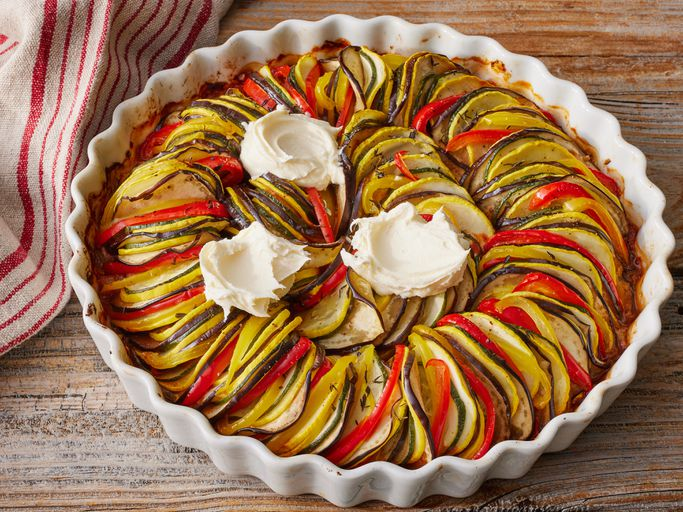

Ratatouille Recipe
eh bein, c'est la Ratatouille!" height=360 width=540>
Description
Ratatouille is a summer vegetable stew that originated as a French
Provencal dish from Nice. Think of the vegetables that grow well in your
yard, ready to be picked together in late summer and early fall — that’s
ratatouille.
It's a stew of zucchini, peppers, tomatoes and eggplant,
with herbs and spices and some onions and garlic usually thrown in for
good measure. The coast of Provence is on the Mediterranean Sea and has
a climate similar to California’s, which means the growing season for
the vegetables in ratatouille are available for many months. You
wouldn’t have it at dinner for New Year’s Eve, but you might have it in
late October through mid-November.
Ingredients
- Can tomato paste
- 1/2 onion, chopped
- 1/4 cup minced garlic
- 3/4 cup water
- 4 tablespoons olive oil, divided
- Salt and ground black pepper to taste
- Small eggplant, trimmed and very thinly sliced
- Zucchini, trimmed and very thinly sliced
- Yellow squash, trimmed and very thinly sliced
- Red bell pepper
- Yellow bell pepper, cored and very thinly sliced
- Teaspoon fresh thyme leaves, or to taste
- 3 tablespoons mascarpone cheese
Steps
- Preheat the oven to 190 degrees C.
- Spread tomato paste onto the bottom of a baking
dish. Sprinkle with onion and garlic. Stir in water and 1
tablespoon olive oil until thoroughly combined. Season with salt
and pepper.
- Arrange alternating slices of eggplant, zucchini, yellow squash,
red bell pepper, and yellow bell pepper, starting at the outer edge
of the dish and working concentrically towards the center. Overlap
slices a little to display colors.
- Drizzle vegetables with remaining 3 tablespoons olive oil; season
with salt and pepper. Sprinkle with thyme leaves. Cover vegetables
with a piece of parchment paper cut to fit inside.
- Bake in the preheated oven until vegetables are roasted and tender,
about 45 minutes. Serve with dollops of mascarpone cheese.
Bon appetit!
Home